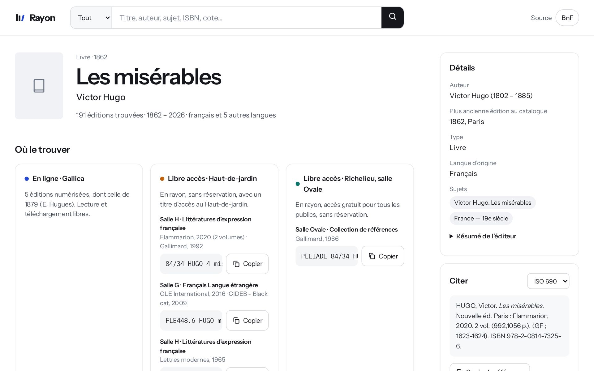
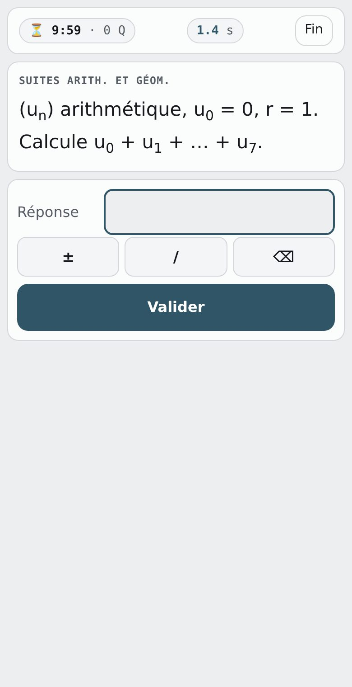

Rayon
Finds a book at the French national library: editions grouped by work, with the reading room and shelf mark.
- Stack
- SvelteKit, TypeScript
- Data
- BnF catalogue
- Status
- Live

18, first-year prépa ECG student in France. Self-taught developer building study tools, web apps and trading bots.
See the workFinds a book at the French national library: editions grouped by work, with the reading room and shelf mark.


Timed mental-maths sprints for prépa ECG, weighted toward my weak spots. One HTML file that works offline.
My student dashboard: homework and timetable synced from the school platform, in one app.
Automated trading bot run from Discord, reading market data from OANDA and Yahoo Finance.
Prépa ECG: two years of maths, economics, general culture and languages before the business-school exams. On the side, I build the software I study with.
Open to collaboration. Email is the quickest way to reach me.